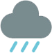

Preston, Idaho
Weather Summary
Currently: Sunny
High: 49°F
Wind Chill: 46°F
Humidity: 65%
Wind Speed: 7mph
5 Day Forecast
Forecast
| Fri | Sat | Sun | Mon | Tues |
|---|---|---|---|---|
 |
 |  |
|
|
| 51°/32° | 42°/29° | 42°/29° | 48°/30° | 54°/32° |
Star Gazing Paradise
By Nate MitkaTucked within the rocky Sawtooth Mountains in Idaho lies a hidden paradise that comes alive at night. Far from cities large and small, this area of the U.S. is exceptionally clear and among the best places in the world to view stars. This week, the International Dark-Sky Association (IDA) designated the Central Idaho Dark Sky Reserve, stretching from Ketchum/Sun Valley to Stanley, Idaho. The announcement protects 1,416 square miles of land, making it the third-largest Dark Sky Reserve in the world. The latest designation comes after more than two decades of work and policy decisions from local leaders, residents, and businesses to manage and reduce light pollution.Continue Reading...
Star Gazing in Idaho
Map of Preston, ID
Contact Information
400 S 4th E
Preston ID 83263
208.555.4848
hello@weatherwise.us